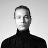

TASARIM ÜSSÜ EKÝBÝNDE GEÇMÝÞTE YER ALANLAR
 |
Fulden TOPALOĞžLU (2010-2011) Çalıştığı Projeler: Atlas Halı, Eti Sütlü Çikolata, Lezzo, Jokey Plastik, Ritzenhoff My Image Anahtarlık, WeeBaby, Hare (Anneler Günü Limited Edition) |
| |
Onur KAYA (2008-2010) Çalıştığı Projeler: Eti Karam Çikolata, Eti Tutku Çikolata, Balkovan Bal Ambalajı, Komili Zeytinyağı (pet şişe ve cam özel seri), Wilco Gömme Rezervuar, Opet Madeni Yağ Ambalajı, Vodka 1967, Binboa, Bocci Lavabo Dolabı, Doğanlar Kapı Kolları (Lazer), Hare (Yılbaşı Limited Edition 2011), Türkiye'nin Zeytinyağı Şişesi |
| |
Gülden MALYA (2006-2008) Çalıştığı Projeler: Tekirdağ Rakısı Şişesi ve Bardağı, Altınbaş Rakı Şişesi, Yeni Rakı Duty Free Kutusu |
| |
Zeynep ARMAN (2005-2006) Çalıştığı Projeler: Tekel Cin Şişesi, Tekel Vodka Şişesi, Doğanlar Kapı Kolları, Yeni Rakı (Bardak), Vitra (Elektronik Pisuar Kumandası, Çocuk ve Yaşlılar İçin Takım) |
| |
Aslı BÖRÜ (2005-2006) Çalıştığı Projeler: Tekel Cin Şişesi, Tekel Vodka Şişesi, Doğanlar Kapı Kolları, Yeni Rakı (Bardak), Vitra (Elektronik Pisuar Kumandası, Çocuk ve Yaşlılar İçin Takım) |
| |
Sıla YİĞİT (2005) Çalıştığı Projeler: Sönmez Tekstil Fuar Standı, Doğanlar Kapı Kolları, PSL World |
| |
Mete AHISKA (2004-2005) Çalıştığı Projeler: Yeni Rakı Şişesi, PSL World (FM5030 we, x-cross mp3 player), Doğanlar Kapı Kolları (Tork) |
| |
İrem GÜNGÖR (2004-2005) Çalıştığı Projeler: Doğanlar Kapı Kolları (Osmanlı), Özyürür Bakalit (Tencere ve Tava Kulpu), PSL World (X-cross mp3 player), Yeni Rakı Şişesi |
| |
Aslı Oğuzer AYDOĞAN (2002- 2004) Çalıştığı Projeler: PSL World (Star, Space Clock, MrSwing), Doğanlar Kapı Kolları, Vitra Engelli Klozet Takımı, Özyürür Bakalit (Tencere Kulpu, Tava Kulpu, Çaydanlık Kulpu), Main Çelik / Tuna (Almira Tencere Kulpu, Çaydanlık ve Çay Seti), Aypaş (Anahtarlık), Cevisama Valencia (TurkishSeramics Fuar Standları), Coverings-Orlando ve Kbis-Chicago (TurkishCeramics Fuar Standları) |
| |
Candaş AYDAR (2006-2007, 2009-2010- 2011-2013) Çalıştığı Projeler: Tekirdağ No 10, Opet Madeni Yağ Ambalajı, Balkovan Bal Ambalajı, Bocchi (Taormina Pro), Tekirdağ Rakısı, Aspen (Bölme Duvar Sistemleri), Binboa Vodka, Altınbaş Rakısı, Türkiye'nin Zeytinyağı Şişesi, Hare(Yılbaşı Limited Edition 2011), Doğanlar Kapı Kolları (Zirve, Elif), Tekirdağ Rakı Bardağı, Eti Karam, Eti Sütlü, Efes Unfiltered, Efes Bahar Birası, Efes Malt |
| |
Ece GÜNAY (2001) Çalıştığı Projeler: Horoz Lojistik Fuar Standı, Denizbank Fuar Standı, Vitra Ürün Teşhir Standı, Vitra Engelli Klozet Takımı |
| |
Emre BAŞARAN (2000-2001) Çalıştığı Projeler: Nurus, Vitra Engelli Klozet Takımı, Aypaş Anahtarlık |
| |
Emrah ÖZTURAN (2011-2012) 2011 yılında Tasarımüssü tasarım ekibine katıldı.Çalıştığı Projeler; Atlas Halı, Efes Bahar Birası, Kalenobel, Asın Farm, Jokey Plastik, Efes Pilsen Unfiletered, Yeni Rakı Nostalji Serisi ve 2012 yılında ekipten ayrıldı. |
| |
Engin HERGÜL (2012-2014) 2012 yılında Tasarım ekibine katıldı.Tekirdağ No 10, Bodino Smile Mousepad, Lezzo Elma Çayı, Balkovan Bal Ambalajı, Yeni Rakı Duty Free Kutusu, Efes Unfiltered, Ritzenhoff Şarap Kadehi, Anahtarlık ve My Little Darling Expresso Fincan Seti, Efes Malt, Efes Pilsen Fıçı, Tekirdağ Rakısı Ailesi gibi projelerde yer aldı ve 2014 yılında ekipten ayrıldı. |
| |
Ali Sinan ÖZTÜRK (2013-2014) Tasarımüssü tasarım ekibine 2013 yılında katıldı, birçok projede yer aldı ve 2014 yılının Temmuz ayında ekipten ayrıldı. |
| |
Duygu ÖZDURGUT (2011-2015) Anadolu Üniversitesi (Eskişehir) Endüstriyel Tasarım Bölümü'nden mezun oldu, halen Galatasaray Üniversitesi'nde MBA öğrencisi.Üniversite eğitim hayatı boyunca Milano Design Week ve i-deco İstanbul Fuarı’nda tasarladığı mobilyalar sergilendi. 2011-2012 yılları arasında ETMK projesinde proje koordinatörü asistanı olarak çalıştı. Ağustos 2012‘de proje yöneticisi olarak Tasarım Üssü ekibine katıldı. Çalıştığı Projeler: Binboa Yılbaşı Limited Edition 2012, Binboa Yılbaşı Limited Edition 2013, Binboa Sevgililer Günü Limited Edition 2013, Baileys Anneler Günü Limited Edition 2013, Baileys Sevgililer Günü Limited Edition 2014, Baileys Anneler Günü Limited Edition 2014. |
| |
Utkan KOZALAN 2015 yılının Nisan ayında ekibe katıldı ve 2015 Ağustos ayında Tasarımüssü ekibinden ayrıldı. |
| |
Cevat SAYILI 2015 yılının Ocak ayında çalışmaya başladı ve 2015 Eylül ayında Tasarımüssü ekibinden ayrıldı. |
| |
Müge GÜLER (2014-2016) Yeditepe Üniversitesi Endüstriyel Tasarım Bölüm’ünden onur derecesi ile mezun oldu. Öğrenciliği süresince, Adnan Serbest Design Stüdyo’da mobilya tasarımı, Arçelik (Tuzla) Ar-ge departmanında elektronik sektöründe, Bun Design’da hediyelik eşya sektöründe deneyim kazandı. Bu süreçte katıldığı workshop ve atölye programları ile mesleki gelişimini devam ettirdi. Mezuniyetinin arından birkaç ay freelancer olarak tasarım sektöründe çalışıp 2014 yılı Nisan ayında Tasarımüssü ekibine katıldı 2016 Nisan ayında ekibimizden ayrılmıştır. |
| |
Ezgi TAŞÇEVİREN (2012-2015) Anadolu Üniversitesi (Eskişehir) Endüstriyel Tasarım Bölümü'nden mezun oldu. Öğrencilik döneminde, Vestel (Manisa) ve Beko (İstanbul) firmalarındaki stajları elektronik ürün tasarımı alanında; Aksu Suardi Tasarım ve Mimarlık stüdyosundaki (Milano) uzun dönem stajı ise mobilya ve aydınlatma alanında deneyim kazanmasına yardımcı oldu. 2010 yılında Dream Design Factory'de (İstanbul) tasarım ve proje koordinasyonu alanında çalıştığı sırada serbest olarak ürün ve grafik tasarımları yapmaya devam etti. Eylül 2011'den bu yana, Tasarımüssü tasarım ekibine katıldı, 2015 yılında Tasarımüssü ekibinden ayrıldı. |
|
Sunguralp ŞOLPAN (2013-2015) Sunguralp 1990 yılında, Bolu'da doğdu. İstanbul Teknik üniversitesi Endüstri Ürünleri Tasarımı Bölümü'nde lisans eğitimini tamamladı. Eğitimi devam ederken Arçelik ve Tasarım Üssü firmalarında stajlar yaptı. Okul yıllarında ayrıca İTÜ Formula SAE takımının 2014 yılındaki "Formula SAE Italy" yarışında ülkemizi temsil edeceği "Tuna" isimli aracın yapımında baş tasarımcı olarak görev yaptı.Okulun son yılı ve mezun olduktan sonra iki yıl daha Tasarım Üssü firmasında çalıştı ve burada Mey İçki ve ETİ gibi kendi pazarlarının lider firmalarının projelerinde bulunma fırsatı yakaladı.2015 yılında Tasarımüssü ekibinden ayrıldı. |
|
Yıldız KAYA (2015-2016) 2008 yılında Yeditepe Üniversitesi Endüstri Ürünleri Tasarımı Bölümünü tam burslu kazandı.Üniversite hayatı süresince Naif Tasarım Adnan Serbest tasarım ofislerinde staj yaparak mobilya alanında deneyim kazandı.2013 yılında mezun olduktan sonra Empati Reklam Ajansında Endüstri Ürünleri Tasarımcısı olarak çalıştı.2015 Mart ayında Tasarım Üssü ekibine katıldı 2016 Haziran ayında ekibimizden ayrıldı. |
|
Ülker ARAL (2014-2016) 2013 yılında Bahçeşehir Üniversitesi Endüstri Ürünleri Tasarımı Bölümünden mezun oldu. Anadolu Cam San. A.Ş. ‘de yaptığı staj esnasında tasarlamış olduğu şarap şişesi üretilmeye hak kazandı. Katılmış olduğu workshoplar ve stajlar sayesinde mobilya, takı ve grafik alanında deneyimler kazandı. 2014 yazında Ritzenhoff markası için Gamze Güven’le birlikte tasarlamış oldukları espresso fincanı üretildi. Eylül ayında Tasarımüssü ekibine katıldı 2016 Mart ayında ekibimizden ayrıldı. |
|
Burcu GÜLDÜRÜR (2004-2017) 1980 yılında İstanbul da doğdu.1995 yılında Özdemir Sabancı Lisesinden mezun oldu, 1996-1998 arası Aramel Kozmetik'te stand hostesliği, 1998-2002 arasında Yues Saint Laurent'de make-up uzmanlığı, 2002-2004 Lancome'de güzellik uzmanlığı görevinde bulundu 2004 yılında Tasarımüssü ekibine katıldı ve 2016 Aralık ayında ekibimizden ayrıldı. |
|
Aslı İrem ATAÇ (2016 - 2017) 1992 yılında doğdu. Bahçeşehir Üniversitesi Mimarlık ve Tasarım Fakültesi “Endüstri Ürünleri Tasarımı” bölümünden 2014 senesinde mezun olduktan sonra, 2015 senesinde Bahçeşehir Üniversitesi Mimarlık ve Tasarım Fakültesi’nde “Endüstriyel Tasarım ve İnovasyon Yönetimi” yüksek lisans programına girdi ve akademik çalışmalarına devam ediyor. Endüstriyel Tasarım alanındaki çalışmalarının yanında, 2014 senesi itibariyle iş hayatında dünya çapında tanınan bir reklam ajansında Grafik Tasarım alanında da çalışmalar yaptı. Stajlarını Arçelik ve Banat firmalarında tamamlayan Aslı İrem ATAÇ, Tasarım Üssü tasarım ekibine 2016 senesinin Eylül ayında dahil oldu, Aralık 2017 de ekibimizden ayrıldı. |
|
Selim EROGLU Kayseri de doğdu.2007 yılında Kayseri Anadolu Güzel Sanatlar lisesinden dereceyle mezun oldu.Bu dönem içerisinde çeşitli yarışmalarda dereceler aldı ve çeşitli sergilere katıldı.2011 yılında Marmara Üni. Endüstri Ürünleri Tasarımı Bölümünü kazandı. Eğitim hayatı süresince çeşitli Tasarım yarışmalarına ve workshoplara katıldı.Kilim mobilyada ve Lüx Plastic şirketlerinde staj yaptı.2015 yılında okuduğu okuldan mezun oldu.Aynı yılın Haziran ayında Tasarımüssü ekibine katıldı ve 2018 yılında ekibimizde ayrıldı. |
Özlem DUYAN / Endüstri Ürünleri Tasarımcısı 1993 yılında doğdu. 2017 yılında Anadolu Üniversitesi, Mimarlık ve Tasarım Fakültesi, Endüstri Ürünleri Tasarımı Bölümü’nden derece ile mezun oldu. Okuduğu yıllar boyunca Anadolu Üniversitesi Tasarım Kulübü’nün, yönetim kurulunda ve grafik ekibinde aktif olarak faaliyet gösterdi. Kulüp ile birlikte birçok etkinliğin organizasyonunda yer aldı. Stajlarını Ford Otosan ve Tasarım Üssü firmalarında tamamladı. Tasarımüssü tasarım ekibine 2017 Eylül ayında dahil oldu. |
Arda ÜLGAY / Endüstri Ürünleri Tasarımcısı 2015 yılında Kadir Has Üniversitesi Endüstriyel Tasarım Bölümü’nden onur derecesi ile mezun olan Arda Ülgay, öğrencilik döneminde ve sonrasında çeşitli kolektif gruplarla birlikte atölyeler, seminerler ve festivallerin organize edilmesine destek olmuştur. Toplum Gönüllüleri Vakfı ile 2012 yılında düzenlenen “Erkeklik İstisnai Bir Durumdur” fotoğraf sergisinde çok sayıda fotoğrafı sergilenen Arda Ülgay, ayrıca otizmli çocuklar için düzenlenen Turkcell Oyuncak Hastanesi projesine katılarak atık oyuncaklardan geri dönüştürülmüş yeni oyuncaklar yaratılmasına katkı sağlamıştır. Sürdürülebilirlik konusu üzerinde çalışmalarını ilerletirken, tasarım felsefesini de bu yönde geliştirmeye devam etmektedir. 2013 yılından itibaren “Sürdürülebilir Yaşam Film Festivali”nin gerçekleştirilmesine destek olarak, daha yaşanabilir bir gelecek için toplumun bilinçlendirilmesine fayda sağlamaktadır. 2015 yılında Endüstriyel Tasarımcı olarak dahil olduğu Tasarımüssü bünyesinde, 2018’de Proje Yöneticisi olarak devam etmektedir. Gamze Güven ile birlikte Ürün, Ambalaj ve Gıda Tasarımı üzerine çalışmalarını sürdürmekte olup Eti, Mey İçki, Pınar, Sütaş, Starbucks, Rapsel, Juss, Şölen ve Unilever birlikte çalıştığı markalardan bazılarıdır. Tasarımüssü ile eşzamanlı olarak kullanıcı deneyimi odaklı Oyun Tasarımı yaparken, kültürel tasarım algısını farklı bir noktaya taşımak ve “Türk Tasarımı” kavramının oluşmasını sağlamak en önemli hedeflerindendir. |
 |
Ada RAHVANCI / Endüstri Ürünleri Tasarımcısı 1993 senesi İstanbul doğumlu. 2015 yılında İstanbul Bilgi Üniversitesi Endüstri Ürünleri Tasarımı bölümünden mezun oldu. 2014 yazında Almanya’da Villeroy & Boch firmasında staj yaptı. Mezun olduktan sonra tasarımın farklı alanlarını deneyimlemek istedi. Servis tasarımı ve sosyal medya üzerine çalışmalara başladı. Grafik ve görsel yeteneklerini geliştirmesi ile birlikte 2017 Aralık ayında Tasarımüssü ekibine katıldı. |
PROJE BAZLI CALIÞANLAR
|
FAHRİYE ÖZBAY (2010) Çalıştığı Projeler: Yeni Rakı Beykoz Serisi |
|
İPEK TORUN (2009) Çalıştığı Projeler: Tekirdağ Rakısı(Grafik Tasarım), Yeni Rakı (Duty Free Grafik Tasarım) |
|
MURAT CELEP (2009-2010) Çalıştığı Projeler: Komili Zeytinyağı (Zeytinyağı, ayçiçek ve mısırözü yağı pet şişe ve teneke grafik tasarımları), Komili Zeytinyağı Özel Seri Cam Şişe (Grafik Tasarımları) |
|
BAYRAM OKAN YAPICI (2007, 2009, 2012, 2016) Çalıştığı Projeler: Aspen Bölme Duvar Sistemi Tasarımı, Komili Zeytinyağı (pet şişe), Tasarım Üssü Web Sitesi Tasarımı , Tasarım Üssü Video Sunumu |
|
PINAR ÖNCEL (2005-2006) Çalıştığı Projeler: Doğanlar Kapı Kolları (Tak Tak, Zümrüt, Park, Olea, Defne, Kavisli, Burç, Kobra, Dilara) |